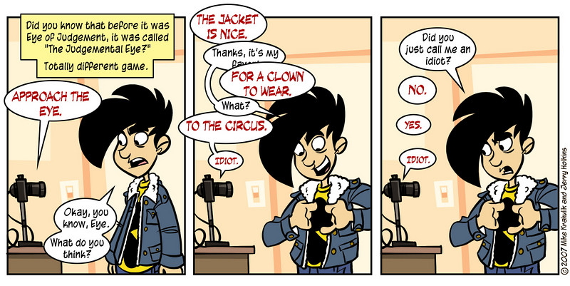

Judgmental Eye
In this lengthy exercise, you’ll tie together a number of important concepts:
HTML
CSS
Forms
Python processing of data files
Flask servers
Relational databases
ORMs / SQLAlchemy
In addition, we’ll introduce a machine learning algorithm in the final further study.
The overall goal of the exercise is to build a website where users can login and add or update ratings of films. If time allows, in the further study we will add another feature, which predicts how the users will rate films. This prediction is based on analysis of how other users rated that film, depending on how similar those other users are to the user. Lastly, we’ll add The Eye, a system user with terrible taste in movies who will berate users for their movie ratings – again, using machine learning to decide how The Eye would rate things.
Object Relational Mappers
If you worked on the project-tracker exercise, you saw how we used classes to model objects that ultimately were stored in a database. In this project, we’ll take this idea further, and introduce a tool called an ORM.
In 2003, Martin Fowler documented a technique called “Active Record,” a scheme which can be diagrammed like so:
Database Concept |
Object-Oriented Concept |
|---|---|
Table |
Class |
Column |
Attribute |
Row |
Instance |
In essence, a table definition is more or less equivalent to a class definition. Each column can be thought of as an attribute or property of that class. Each row is also analogous to an instantiation of the class. The analogy isn’t perfect, but it serves us well enough. The analogy allows us to construct software that, through the magic of “introspection” (self-examination), can automatically write and execute SQL queries for us without the programmer having to stop and think about the SQL required to accomplish a task.
Here’s an example. Given the following SQL:
CREATE TABLE users
(user_id SERIAL PRIMARY KEY NOT NULL,
email VARCHAR(64),
password VARCHAR(64));
Here is how you might set up the class:
class User(object):
"""A user of our website; stored in a database."""
__tablename__ = "users"
def __init__(self, user_id, email, password):
"""Create a user, given id, email, and password."""
self.user_id = user_id
self.email = email
self.password = password
@classmethod
def get_by_id(cls, user_id):
"""Get a user from database by ID and return instance."""
QUERY = """SELECT user_id, email, password
FROM users WHERE user_id = :id"""
cursor = db.session.execute(QUERY, {'id': user_id})
user_id, email, password = cursor.fetchone()
return cls(user_id, email, password)
def change_password(self, password):
"""Change password for the user."""
QUERY = ("UPDATE users SET password = :password " +
"WHERE user_id = :id")
db.session.execute(QUERY, {'password': password,
'id': self.user_id})
db.session.commit()
And, with that class, here’s how you would update a user’s password:
jessica = User.get_by_id(5)
jessica.change_password("my-new-password")
There’s nothing wrong here yet, but if we wanted to be able to update the user’s email address as well, we start having to write significant amounts of repetitive code.
An ORM provides us with a slightly different workflow. Instead of writing a bunch of code to handle SQL, it instead peeks at your class definitions (“introspects it”) and uses the information gathered to generate appropriate SQL. Our User class definition changes:
Given this, our ORM can deduce the original schema we generated earlier. The generation of the SQL schema can be left to the software. Furthermore, our previous example of changing a user’s password can be done as follows:
jessica = User.query.get(2)
jessica.password = "my-new-password"
db.session.commit()
The change_password() function no longer exists in that form; its
existence is obviated as we can access columns directly as if they were
object attributes, as long as we commit the database after every
modification to an object. Overall, the amount of overhead code required
to store data for an app dropped precipitously when ORMs first appeared,
allowing lone programmers to single-handedly build a full-stack application
in shorter time periods.
For this project, we will continue using SQLAlchemy as our ORM.
There are other ORMs out there, each implementing the ideas in Fowler’s book slightly differently.
Other ORMs
The other primary competing Python-based ORM is the one that is bundled with Django. The one restriction for that one is that it cannot easily be used outside of Django, so we won’t consider it here.
Setup
There are a number of Python libraries we’ll need for this project.
We’ll create a virtual environment and install them, using a requirements.txt file that has the names and exact versions of products we’d like to use:
$ virtualenv env New python executable in env/bin/python Installing setuptools, pip...done. $ source env/bin/activate (env) $ pip3 install -r requirements.txt Downloading/unpacking Flask (from -r requirements.txt (line 1)) Downloading Flask-0.10.1.tar.gz (544kB): 544kB downloaded ... Successfully installed Flask Flask-SQLAlchemy Jinja2 ... Cleaning up... (env) $
Awesome.
Investigating Our Data
The dataset we’ll be using is something called the MovieLens 100k dataset. It consists of many ratings of movies from users. We’ll mine this data for correlations, but first we need to know what it looks like.
The data has already been unpacked for you in the seed_data/ directory. Take a look:
u.data
u.item
u.user
These files have been extracted from the MovieLens 100k; in the original documentation that came with the data set was the following information:
u.item
Information about the items (movies); this is a |-separated
list of:
movie id | movie title | release date | video release date |
IMDb URL | unknown | Action | Adventure | Animation |
Children's | Comedy | Crime | Documentary | Drama | Fantasy |
Film-Noir | Horror | Musical | Mystery | Romance | Sci-Fi |
Thriller | War | Western |
The last 19 fields are the genres, a 1 indicates the movie is of that genre, a 0 indicates it is not; movies can be in several genres at once (however, we won’t be using genre information at all in this exercise).
The movie ids are the ones used in the u.data data set.
u.user
Demographic information about the users; this is a |- separated
list of:
user id | age | gender | occupation | zip code
The user ids are the ones used in the u.data data set.
u.data
The full user data set, 100,000 ratings by 943 users on 1682 items.
Each user has rated at least 20 movies. Users and items are
numbered consecutively from 1. The data is randomly
ordered. This is a tab (\t) separated list of:
user_id \t movie_id \t score \t timestamp.
The score column is an integer between 1 and 5 that will form the basis for our rating system throughout this exercise.
We don’t use them for our data set, but it’s good to understand the formatting for the time stamp here–they’re integers, and measured in what UNIX calls “epoch time”–seconds since 1/1/1970 UTC.
What’s the Model?
Spend a little bit trying to decipher the files before moving on. It will make it easier to remember that in this data set, “items” are movies.
Stop here and think about how these three files constitute a “model” – that is, how they cooperate together to provide a set of information. It might help to imagine how, given a movie name, you could find a list of the users who rated that movie.
Thinking About the Model
If you caught the copious hints, you should be thinking that each of these files is a table in a database. Every one of the columns in the file is the same as a database column. To reconstruct an entire record (who rated what movie) we first go to the u.data table to get a user_id and a movie_id. We take those numbers and search their respective files for the row id that matches, then glue all three rows together.
Building the Database
Okay, so our data is in files and we need to put them into database tables. Great, we’ll start writing a schema. Identify the tables we’ll need to make, and sketch out the schema.
We’re not going to use all the genre data for movies, nor are we going to keep track of users’ genders or occupations.
However, we’ll add authentication data to the user schema, adding both an email and password, while making the remaining user data optional. Sketch out a rough schema as well as any relationships between the tables (has many, belongs to, etc).
Going by our files, we can come up with the following skeleton:
Model
User
Name |
Type |
|---|---|
user_id |
integer, primary key |
optional string |
|
password |
optional string |
age |
optional integer |
zipcode |
optional string (technically, these aren’t numeric) |
Movie
Name |
Type |
|---|---|
movie_id |
integer, primary key |
title |
string |
released_at |
datetime |
imdb_url |
string |
Rating
Name |
Type |
|---|---|
rating_id |
integer, primary key |
movie_id |
integer |
user_id |
integer |
score |
integer |
Relationships
A user has many ratings
A rating belongs to a user
A movie has many ratings
A rating belongs to a movie
A user has many movies through ratings
A movie has many users through ratings
We can draw that model as a diagram as such:
Model
Now, to write the SQL.
Well, not so fast. Writing SQL can be tedious work. It needs to be done, but it gets tricky remembering the syntax. We’ll write code that writes our schemas for us.
First, look in your project directory. You should see a model.py file. We’ll begin the alchemy.
SQLAlchemy is powerful software, and the process it uses to transmute python into SQL and back is indeed alchemical. While it would be most excellent for you to understand exactly what’s happening, at this stage we just need to be able use it reliably. Trust the incantations, then open your model.py file, and we’ll take a look at the User model sample that has been provided.
class User(db.Model):
"""User of ratings website."""
So far, the only thing out of the ordinary is the inheritance from a class named Model, which we find on the db object. This is how we declare a class to be managed by SQLAlchemy.
This db.Model class is required for SQLAlchemy’s magic to work.
The next few lines are how we define our table and its columns:
class User(db.Model):
"""User of ratings website."""
__tablename__ = "users"
user_id = db.Column(db.Integer,
autoincrement=True,
primary_key=True)
email = db.Column(db.String(64), nullable=True)
We’ll go over it line by line, but try not to find the deeper reasons for this syntax: this is a fairly non-standard use of python class attributes. It’s allowed by the language definition, but ultimately, these lines we just added are SQLAlchemy specific and only make sense in that context. It’s good to remember them, but it’s equally good to remember how to look them up.
The first line:
__tablename__ = "users"
Simply informs SQLAlchemy that instances of this class will be stored in a table named users.
The next:
user_id = db.Column(db.Integer, autoincrement=True, primary_key=True)
Tells SQLAlchemy to add a column to the table named user_id. It will contain an integer, and be the primary key for our table: it will uniquely identify every row in the table.
The next line contains something slightly different:
email = db.Column(db.String(64), nullable=True)
This behaves as you’d expect, with the exception of the nullable=True
part. That tells SQLAlchemy (and thus, PostgreSQL) that this column is optional.
It’s allowed to be NULL. Since our MovieLens 100k data set is anonymized,
we won’t have any email addresses for any of the users we’re given. However,
to simplify things, we’ll be using the same table to store new users who
can log in via email, so we need to make the field available for them.
The remaining columns follow in a similar fashion.
The word String is not a built-in python class (that one is str), nor is Integer (int, respectively). These are the SQLAlchemy-managed versions of the same data types. You’ll find that they’re imported from db, at the top of the file. SQLAlchemy has a number of other data types as well, including datetimes, booleans, floats, etc., all imported from the same place.
The last thing of note is that there is no __init__() method. SQLAlchemy’s
Model superclass provides one for you that uses keyword arguments when
initializing objects.
In our terminal window with the activated virtual environment, run your
model.py with the -i option:
(env) $ python3 -i model.py
Connected to DB.
>>>
We’ve put some code at the bottom of the model.py file already that connects to the database. Open a second terminal window and type:
(env) $ psql ratings
to verify that the ratings database does not exist. You should see:
psql: FATAL: database "ratings" does not exist
Now in your terminal create your empty database by typing:
(env) $ createdb ratings
Then, back in the same python console execute the method on the database connection that creates the tables:
>>> db.create_all()
Back in your second window type:
(env) $ psql ratings
This time you should see something like:
psql (9.4.4)
Type "help" for help.
ratings=#
Enter \d (the “d” stands for “describe”) to see what tables are in the ratings database,
and then \d users and you should see something like this:
ratings=# \d
List of relations
Schema | Name | Type | Owner
--------+-----------------------+----------+--------------
public | users | table | postgres
public | users_user_id_seq | sequence | postgres
(2 rows)
ratings=# \d users
Table "public.users"
Column | Type | Modifiers
----------+-----------------------+---------------------------------------------
user_id | integer | not null default nextval ...
email | character varying(64) |
password | character varying(64) |
age | integer |
zipcode | character varying(15) |
Indexes:
"users_pkey" PRIMARY KEY, btree (user_id)
Mind = blown
To Do
Quit both psql and python.
Drop your ratings database (dropdb ratings).
You will refer to the schema for movies and ratings (below) to create two additional classes — Movie and Rating. They will be used to hold the information that we want to keep from the data files.
Before you get started, notice that the schema for movies requires a column called released_at with the type, datetime. Be sure to use the SQLAlchemy type, db.DateTime for this column. It will become important later.
If necessary, you can refer to the SQLAlchemy tutorial or your lecture notes.
Movie Schema
Name |
Type |
|---|---|
movie_id |
integer, primary key |
title |
string |
released_at |
datetime |
imdb_url |
string |
Rating Schema
Name |
Type |
|---|---|
rating_id |
integer, primary key |
movie_id |
integer |
user_id |
integer |
score |
integer |
When you’re done, repeat the process of running db.create_all() to create
your tables. Reopen your PostgreSQL database in your second window.
Populating Our Tables with Data
In your PostgreSQL window, insert a new row into your users table:
ratings=# INSERT INTO users (email, password, age, zipcode) ratings=# VALUES ('jessica@gmail.com', 'mypass', 29, '94114');
Now, we will transmute SQL into Python. First, query to see your shiny new record in PostgreSQL:
ratings=# SELECT * FROM users; user_id | email | password | age | zipcode ----------+-----------------------+----------+----------+---------- 1 | jessica@gmail.com | mypass | 29 | 94114
Switch to another terminal window and do the following:
$ python3 -i model.py Connected to DB. >>> jessica = User.query.get(1) >>> print(jessica.email) jessica@gmail.com
The 1 in the get() method is the id of the User we want to get from our
table. If your database has a different id for the user you want to find, use
that instead.
Before we go further, let’s see what happens if we print out the user directly:
>>> print(jessica)
<User 1>
When you print out a SQLAlchemy object in Python (either in a script or in the
Python console), it normally prints something like <User 1>,
which just tells us the primary key of that object. That’s not very
helpful; it would be more helpful to get some useful information for debugging
what user we’re dealing with.
Therefore, we’ll add a magic method to User, __repr__(). If you define
this method on a class, when Python tries to “represent” an instance of this
class, it will use this instead.
def __repr__(self):
"""Provide helpful representation when printed."""
return f"<User user_id={self.user_id} email={self.email}>"
To get this new Python code, you’ll need to quit the Python console and re-start:
$ python3 -i model.py Connected to DB. >>> jessica = User.query.get(1) >>> print(jessica) <User user_id=1 email=jessica@gmail.com>
That’s helpful.
Let’s update her password to be something more secure:
>>> jessica.password = "qfujf3"
Now, let’s query the database to see if that worked:
ratings=# SELECT * FROM users; user_id | email | password | age | zipcode ----------+-----------------------+----------+----------+---------- 1 | jessica@gmail.com | mypass | 29 | 94114
The new password isn’t there! What gives? Well, like when we did raw SQL (and not dissimilar to Git), we need to commit data after we’ve modified it.
In Python:
>>> db.session.commit()
And query again:
ratings=# SELECT * FROM users; user_id | email | password | age | zipcode ----------+-----------------------+----------+----------+---------- 1 | jessica@gmail.com | qfujf3 | 29 | 94114
SQLAlchemy took our python and wrote the appropriate SQL update query for us behind the scenes. This is a powerful idea, because now we can write programs, only worrying about the classes and data we’re interested in, and not how to write the SQL we need to save it somewhere.
Once more, for effect:
Reversing Direction
We inserted data in SQL, then got it back out on the python end, where we could update it. Now, let’s do the reverse, where we insert data in from python. Let’s make a record for Jada.
>>> jada = User(email="jada@gmail.com", password="abc123", age=25, ... zipcode="94103")
If we query the database, we get nothing:
ratings=# SELECT * FROM users; user_id | email | password | age | zipcode ----------+-----------------------+----------+----------+---------- 1 | jessica@gmail.com | qfujf3 | 29 | 94114
Right, we have to commit first. Actually, we have to do more than commit. Right now, we have a User object that we created in Python, but that isn’t reflected in the database immediately. There are times when we want to do exactly this, so SQLAlchemy forces us to be explicit when we want to insert something into the database as well. We do this by adding an object to our session. Here, the Git parallel is particularly strong.
>>> db.session.add(jada) >>> db.session.commit()
Now, in PostgreSQL, one more time:
ratings=# SELECT * FROM users; user_id | email | password | age | zipcode ----------+-----------------------+----------+----------+---------- 1 | jessica@gmail.com | qfujf3 | 29 | 94114 2 | jada@gmail.com | abc123 | 25 | 94103
Now that our object has been “added” to the database, it is being tracked, and if we need to update it, we only need to commit after modifying it:
>>> jada.password = "bunnies" >>> db.session.commit()
and to confirm:
ratings=# SELECT * FROM users WHERE user_id = 2; user_id | email | password | age | zipcode ----------+-----------------------+----------+----------+---------- 2 | jada@gmail.com | bunnies | 25 | 94103
Let’s do one more thing. So far, we’ve relied on PostgreSQL to assign unique ids to our users. We can specify an id when creating a user.
>>> juanita = User(user_id=5, email="juanita@gmail.com", ... password="abc123", age=42, zipcode="94103") >>> db.session.add(juanita) >>> db.session.commit()
If we query the database, we should see this:
ratings=# SELECT * FROM users WHERE email='juanita@gmail.com'; user_id | email | password | age | zipcode ----------+-----------------------+----------+----------+---------- 5 | juanita@gmail.com | abc123 | 42 | 94103
Experiment with adding, committing, and querying to make sure you understand
how data goes into PostgreSQL through Python, and how to get it back out. Add
new records on both the PostgreSQL and Python sides, and use .get() to get
them back out. Change some fields, then commit them back and see how the
columns get updated. Do this for all three tables, then get ready to wipe
them out.
First, drop your ratings database using the dropdb command. Then,
recreate your database using the createdb command. Reconnect to your
model.py file and run db.create_all() in order to recreate your ratings
database.
(env) $ dropdb ratings (env) $ createdb ratings (env) $ python3 -i model.py Connected to DB. >>> db.create_all()
Reading Data From Seed Files
Now that we know how to insert single rows into the database, we have to bulk insert a bunch of our movie data. You’ll find a file, seed.py, which contains a rough outline of what needs to happen. You’ll need to open up the seed files corresponding to each table, read each row in, parse it, then insert it into the database using our SQLAlchemy object interface.
The general steps are:
Open and read a file
Parse a line
Create an object
Add the object to the db.session
Repeat until all objects are added
Commit
We’ve supplied the first, load_users, to give you a sense of what to do for
the others. Read it carefully. Each of the files is formatted slightly
differently, so you’ll have to modify the second two functions to account for
those changes.
Why hardcode primary key for users?
In most cases, you shouldn’t have to hardcode the primary key for database records that you create. In this case, we aren’t just loading data for users. We are also loading users’ movie ratings. We have to hardcode the primary key for users because they are used as foreign keys in the ratings table.
Before you get started, we need to talk about how to work with the db.DateTime column-type so keep reading.
Loading Dates
The movies include the year of release at the end of the title ("Balloonicorn's
Big Adventure (2010)"). We don’t want to include that parenthetical date in
the database since we are already storing release dates in a separate column
(called released_at). You need to figure out a way to remove the release
year from movie titles before they go into the database.
Speaking of the released_at column, when you read data in from a file, you’ll
get the release date of each movie as a string ("31-Oct-2015"). Recall that
the data type for released_at is db.DateTime and not db.String. This
means we need to convert the strings to actual datetime objects. We can do
this with Python’s built-in datetime module.
The datetime module provides various classes for working with dates and times. One of those classes is the datetime class. The best way to learn about this class is to experiment with it. In your terminal, start the Python REPL and import the datetime class from the datetime module:
>>> from datetime import datetime
Now we can experiment with the datetime class. The datetime class has a class method called datetime.strptime. It can turn a string into a datetime object. This is the method we’ll use to convert dates from our data file to datetime objects. To demonstrate how it works, type the following lines of code into the Python REPL:
>>> date_str = "31-Oct-2015"
>>> format = "%d-%b-%Y"
>>> date = datetime.strptime(date_str, format)
>>> date
datetime.datetime(2015, 10, 31, 0, 0)
>>> date.year
2015
>>> date.month
10
>>> date.day
31
Here’s how datetime.strptime works:
datetime.strptime(date_string, format)Return a datetime corresponding to date_string, parsed according to format.
In other words, it takes in two arguments:
date_string — a string with a date in it (the data that you want to turn into a datetime object)
format — a string that tells Python how the date is formatted. It uses time format codes adopted from the 1989 C standard.
Time format codes start with a percent sign followed by another character. In
the first example, our format string was "%d-%b-%Y". Here’s a breakdown of
each format code used in the example:
Code |
Description |
Example |
|---|---|---|
|
The day of the month as a zero-padded number |
01, 02, …, 30, 31 |
|
The month’s abbreviated name |
Jan, Feb …, Nov, Dec |
|
The four-digit year |
1999, 2000, …, 2019 |
You can view all the different format codes in this handy-dandy cheatsheet.
Let’s see another example of datetime.strptime so you can get a feel for how the format codes work. Type the following in the Python REPL:
>>> date_str2 = "Python 3.8 release: October 14th, 2019"
>>> format2 = "Python 3.8 release: %B %dth, %Y"
>>> date2 = datetime.strptime(date_str2, format2)
>>> date2
datetime.datetime(2019, 10, 14, 0, 0)
>>> date2.year
2019
>>> date2.month
10
>>> date2.day
14
Refer to the time-format cheatsheet — which format codes are we using and what do they mean? As a challenge to yourself, write dates and times in different ways and convert them to datetime objects.
Now you’re ready to write your load functions!
Autoincrement
Much like the Take-A-Number dispenser at the deli, Postgres uses sequences to set the values for autoincrement columns. By default, the sequence starts at 1. Since we loaded in the user_ids from the data file when we seeded our database, we haven’t used the sequence yet. When we create a new user later on, Postgres will attempt to assign it id 1 (the first number in the sequence), and this will generate an error, because there already is a user with user_id 1.
To prevent this error, we’ve included a function set_val_user_id in seed.py. This function queries users to find the maximum id, and then sets our sequence next value to be one more than that max.
If you want to better understand how this function works, enter psql from the
terminal. Just as \dt shows a list of the tables, \d lists all tables, views, and sequences. After you seed the database, you can see that you have:
ratings=# d
List of relations
Schema | Name | Type | Owner
--------+-----------------------+----------+-----------
public | movies | table | user
public | movies_movie_id_seq | sequence | user
public | ratings | table | user
public | ratings_rating_id_seq | sequence | user
public | users | table | user
public | users_user_id_seq | sequence | user
We are adjusting the users_user_id_seq, using the Postgres function setval. You can read more about Postgres functions on sequences here.
Once you’re done, move on to Part 2 or review the solution code.